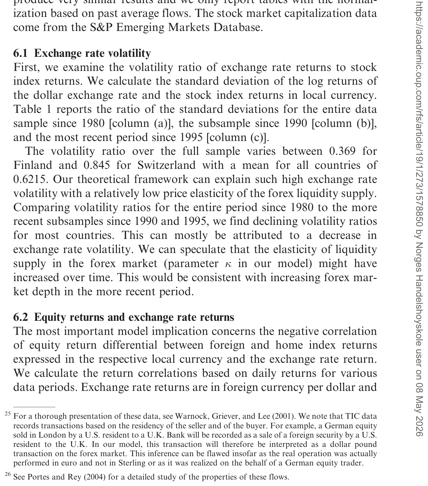
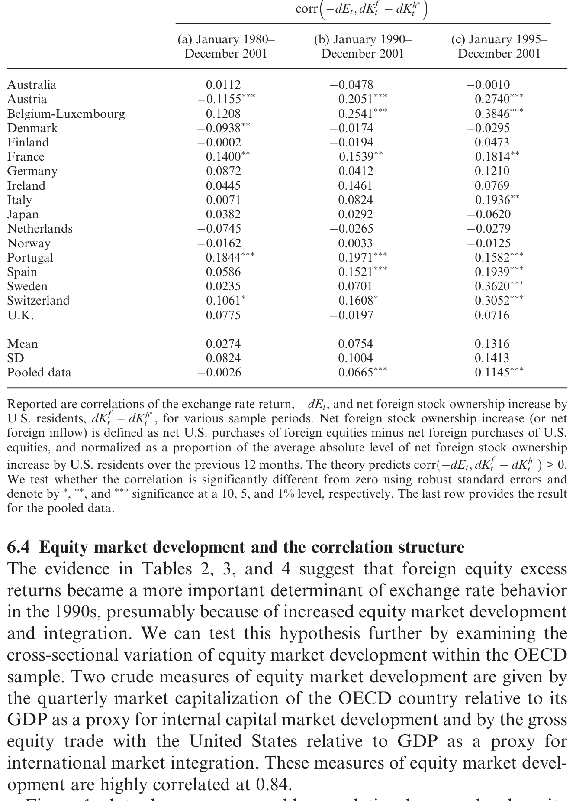
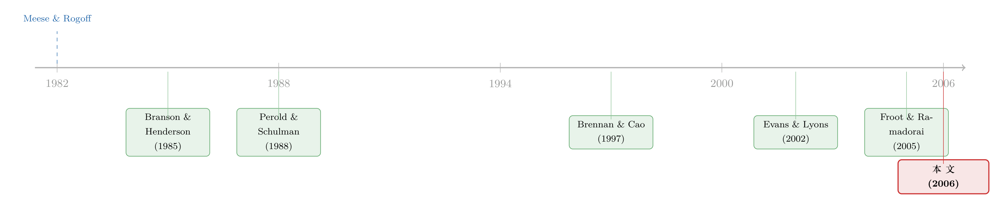

强股市，为什么配着弱货币？——一条「未抛补股票平价」的暗线
本文读的是 Hau & Rey (2006, Review of Financial Studies)：当投资者对外汇风险「几乎不对冲」时，汇率、股价与资本流动会被一个简单的均衡模型同时决定。它给出一个反直觉的预言——本国股市相对外国股市表现更好，本币反而会贬值；钱流入外国股市，外币反而升值。作者称之为「未抛补股票平价 (uncovered equity parity)」，并用 17 个 OECD 国家对美国的日度、月度、季度数据把它牢牢钉住。
1 一个被数据反复打脸的「常识」
先问一个几乎所有人都觉得理所当然的问题：一国股市火热、外资蜂拥而入，那这个国家的货币是不是该升值？毕竟外国人要买你的股票，总得先把他们的货币换成你的货币——需求一上来，本币不就该涨吗？
这听起来天经地义。可问题是，数据并不买账。
事情还得从汇率经济学最著名的一桩「悬案」说起。1980 年代初，Meese 和 Rogoff (1982, 1983) 做了一件让整个领域至今难堪的事：他们把货币供给、实际收入、利率、通胀、经常账户这些教科书里的宏观基本面统统塞进汇率模型，结果发现——在短到中期的频率上，这些模型的样本外预测，竟然连「下一期汇率等于这一期汇率」这种最笨的随机游走都跑不赢。后来 Frankel 和 Rose (1995) 干脆下了一句近乎绝望的判词：没有任何基于货币、收入、利率、通胀、经常账户的模型，能在短中期解释或预测汇率变动的较高比例。
这就是著名的「汇率脱节 (exchange rate disconnect)」。基本面解释不了汇率，那汇率到底听谁的？
接着，一个自然的问题是：既然宏观变量不行，会不会是交易本身在推动汇率？微观结构 (microstructure) 文献顺着这条线挖了下去。Evans 和 Lyons (2002a)、Lyons (2001)、Hau、Killeen 和 Moore (2002) 等人发现，外汇市场的订单流 (order flow)——也就是买单减去卖单的净额——与同期汇率变动的相关性高得惊人。换句话说，谁在净买谁在净卖，几乎就写定了汇率往哪儿走。
但这里留下了一个大窟窿。订单流确实能解释汇率，可订单流自己又是从哪儿来的？它不会凭空冒出来。它一定是某些投资者出于某种最优化的资产组合决策、想要调仓，才在外汇市场上留下了买卖的痕迹。然而在 Hau 和 Rey 动手之前，没有一个模型把「投资者的最优国际投资行为」「外汇订单流」和「宏观汇率」三者放进同一个均衡里。微观结构和宏观基本面之间，隔着一道没人架起桥的鸿沟。
这篇论文要做的，就是架这座桥。
（汇率与股市之间这条「传声筒」，本博客另一篇评述也专门谈过，可参见《汇率，是股市之间那根看不见的传声筒》。）
2 真正关键的一步：外汇风险「几乎没人对冲」
要架桥，得先找到一块结实的地基。Hau 和 Rey 找的这块地基，是一个看似技术性、实则极其要害的假设：外汇风险交易是不完全的 (incomplete forex risk trading)。
为什么这一步是关键？因为在一个完全市场、两国对称、市值相等的世界里，对冲汇率风险其实是一顿「免费午餐」——这是 Perold 和 Schulman (1988)、Karolyi 和 Stulz (2002) 早就指出的。本国投资者只要和持有相反头寸的外国投资者做一笔互换，就能把汇率风险干净地抵消掉。如果真是这样，那本国投资和国际投资就没有本质区别，汇率也就不会成为一个独立的、被资产组合搅动的变量。
但真实世界是这样吗？作者搬出了一组让人印象深刻的证据。Levich、Hayt 和 Ripston (1999) 调查了 298 家美国机构投资者：超过 20% 的机构根本不被允许持有衍生品；另有 25% 虽然不受限制，却根本不去交易衍生品；剩下 55% 也只对冲了一小部分外汇敞口。算到最后，整个样本里被对冲的外汇风险，只占外国股票投资总额的 8%。作者还私下问了 State Street 和 Citibank 两家大型托管行，独立估计的名义对冲比例都 不到 10%。
这意味着：典型的外国股票投资者，是把「货币收益风险」和「外国股票收益风险」当成一个捆绑包一起持有的。市场可以近乎无摩擦地跨境买卖股票，却没能把附着其上的汇率风险单独拿出来交易、对冲掉。这种不完全，不是因为没有市场（外汇衍生品当然存在），而是因为使用它们要付出的交易成本和代理成本。
地基一旦定下，整座桥的逻辑就活了：既然汇率风险对冲不掉，投资者就必须同时关心汇率的波动、以及汇率与外国股票收益的相关结构。于是，资产组合的选择会依赖汇率的动态；而反过来，动态的组合调整又会搅动汇率本身。这正是那个被微观结构文献观察到、却没人解释的订单流的源头。
3 模型：把投资、订单流、汇率拧进一个均衡
下面进入模型。作者很诚实地说，为了保住可解性、换取直觉，他们做了不少强假设。但骨架很清楚，我们一步步看。
世界的设定。 两个国家，各有一个风险厌恶的代表性投资者（本国 h、外国 f）。每个国家有一只股票，分别派发外生的随机红利流 \(D^h_t\) 和 \(D^f_t\)（以本币计）。两国各有一只无风险债券，提供恒定利率 \(r\)；为了对称，令 \(r=r^*\)。一个要害的简化是：债券供给被假定为无限弹性（央行盯住利率），而股票供给固定、外汇供给则不是完全弹性的——后者正是为了对接微观结构文献里「订单流推动汇率」的发现。
投资者在最优化什么？ 这是模型的心脏。两位投资者都以本币计量利润，追求一个「均值—方差」的权衡：在期望利润流和瞬时利润风险之间找平衡。形式上，本国投资者选择持仓 \(K_t=(K^h_t,K^f_t)\)，求解：
其中超额利润流 \(d\pi_t = K_t\, dR_t\)，外国投资者对称地有 \(d\pi^*_t = K^*_t\, dR^*_t\)；财富按 \(dW_t = d\pi_t + W_t r\,dt\) 演化。这个目标函数的好处是，它给出的资产需求线性地取决于「期望收益 / 瞬时风险」之比——干净、可解。作者特意没有引入跨期对冲需求 (intertemporal hedging demand)，就是为了把舞台留给股票与外汇两个市场之间的动态互动。
三个市场同时出清。 两只股票要出清，把流通量标准化为 1：
$$K^h_t + K^{h*}_t = 1, \qquad K^f_t + K^{f*}_t = 1$$
而真正把组合决策翻译成汇率的，是外汇市场的出清。设汇率 \(E_t\) 以「每单位本币兑多少外币」计价（\(E_t\) 上升 = 本币升值）。由股票交易引发的、流出本国的资本流 \(dQ_t\)（以外币计）可以写成：
$$dQ_t = E_t K^{h*}_t D^h_t\,dt - K^f_t D^f_t\,dt + dK^f_t P^f_t - E_t\, dK^{h*}_t P^h_t$$
这一步是整座桥的桥面。前两项是红利汇回：如果所有股息都被汇回母国，就产生跨境资金流。后两项是净买卖：\(dK^f_t\) 是本国投资者增持外国股票（→ 买入外币、资金外流），\(dK^{h*}_t\) 是外国投资者增持本国股票（→ 买入本币、资金内流）。由于所有资产交易都在计价货币内完成，一笔净资本外流就恒等于一笔对外币的净需求——这正好就是微观结构文献里的那个「订单流」。作者再把它线性化，让分析可解。
最后一块拼图：这笔投资者订单流，被流动性供给银行吸收，而它们的外汇供给不是完全弹性的。于是订单流推动汇率——与微观结构的经验发现严丝合缝。（外汇做市商的「供给曲线为什么不平」、流动性约束如何放大价格冲击，本博客也有专门讨论，可参见《无风险市场里的风险厌恶：是谁给做市商系上了「风险限额」这根绳》与《全世界最大的市场，也有「推不动」的时候》。）
4 反转：强股市，为什么配着弱货币
把上面三块拼起来求解，模型吐出了一个漂亮而反直觉的结论。作者把三条最核心的可检验含义并列出来：
- 波动率：市场不完全 + 外汇流动性供给的低价格弹性，会让汇率变得几乎和股价一样波动。
- 未抛补股票平价：本国股市（以本币计）相对外国股市收益更高，反而对应着本币贬值。
- 资本流动：净流入外国市场的股票资金，与外币升值正相关。
第二条就是那个反转。它为什么成立？关键还是回到那块地基——组合再平衡 (portfolio rebalancing)。
设想外国股票表现突然跑赢了本国股票。对本国投资者来说，他手里那一大块外国股票，附带着无法对冲的汇率敞口；外国股票一涨，这块敞口在他整个组合里的占比就被动放大，汇率风险暴露过头了。怎么办？他会把一部分外国股票财富汇回，来压低这份汇率风险。可一旦他这么做，就要卖出外币——于是外币贬值、本币升值。
反过来推：本国股市相对跑赢时，外国投资者出于同样的再平衡动机回补，资金流向本国，结果是本币升值。把两边合起来，「股票收益差」和「汇率收益」之间，就被组合再平衡硬生生压出了一个负相关。这与「强股市配强货币」的街头智慧恰好相反——理论和后面的证据都站在了常识的对立面。
5 数据：17 个国家，三个频率，都点头
光有漂亮的理论还不够。作者拿 17 个 OECD 国家对美国的股指收益与汇率收益数据来对质，频率覆盖日度、月度、季度。
第一条预言——汇率波动率与股票波动率之比——结果如何？这个比值普遍小于 1，且落在模型能复现的区间里。也就是说，汇率确实没股价那么野，但也已经被搅得相当活跃，恰是「市场不完全 + 外汇供给低弹性」所预言的量级。

Table 1: reports the ratio of the standard deviations for the entire data
第二条预言——「外国相对美国的股票超额收益」与「外币收益」之间的负相关——得到了强统计显著性的支持。作者特意强调，这个负相关之所以引人注目，是因为它与同一组国家里早已声名狼藉的「未抛补利率平价 (uncovered interest parity, UIP)」失效形成了鲜明对比：UIP 在数据里几乎总是不成立，而这条「股票版」的平价关系却稳稳立住了。
更妙的是两个异质性证据，它们直接指向「这事确实和股票市场的发展有关」：
- 时间维度：负相关在 1990 年后最强——这正是各国股票市场更加开放、跨境股权流动迅速膨胀的时期。
- 截面维度：负相关在股票市值/GDP 比最高、市场最发达的国家里最显著。
最后，作者用同一批国家的月度股票资金流数据验证第三条预言：合并回归 (pooled regression) 揭示出，流入外国市场的股票资金与外币升值正相关——与模型再次吻合。

Figure 1: plots the average monthly correlation between local equity
这背后是一个宏大的时代背景在撑腰。美国的跨境债券与股票交易量，1975 年还只相当于 GDP 的 4%，到 1990 年代初已升到 100%，2000 年更飙到 245%；而且其中股权的占比越来越高，1990 年代初股票资金已占发达国家总资本流动的 30% 以上。当资本流动的主体从银行贷款变成股权，一个以「股权资金流」为核心的汇率新范式，才真正有了用武之地。
6 文献脉络
把这条线索摆开看，会更清楚这篇论文站在哪儿。
最早的源头是 Meese 和 Rogoff (1982, 1983) 制造的「汇率脱节」难题，以及 Frankel 和 Rose (1995) 的悲观总结——宏观基本面在短中期解释不了汇率。传统的资产市场/组合平衡方法由 Branson 和 Henderson (1985) 系统化，但它通常外生地给定资产价格过程、又往往套上购买力平价，国际股票市场在其中没有戏份。
接着是两条平行推进的线。一条是国际组合投资的理论：Brennan 和 Cao (1997) 用信息不对称、Griffin、Nardari 和 Stulz (2002) 用外生的预期差异来区分本外国投资者——但它们都只建模美元收益，没有汇率这个变量。另一条是外汇微观结构：Evans 和 Lyons (2002a)、Lyons (2001) 把订单流抬上了主角的位置，Froot、O'Connell 和 Seasholes (2001)、Froot 和 Ramadorai (2005) 更用托管行的专有订单流数据，发现投资者订单流对汇率的冲击极其持久、在约一个月的视野上达到峰值。
而对冲那一侧，Perold 和 Schulman (1988)、Karolyi 和 Stulz (2002) 点明了完全市场下汇率对冲是「免费午餐」——恰恰是这个基准，被本文用「8% 的对冲率」这一现实证据推翻。

Hau 和 Rey 站在这些线索的交汇处：他们保留了微观结构「订单流推汇率」的洞见，却把订单流内生地从最优国际投资行为里推导出来；他们继承了组合平衡的传统，却把股价与汇率过程一起内生化；他们抓住了真实世界「外汇风险几乎不对冲」这一点，把它变成模型最要害的结构假设。这条研究后来由 Hau 和 Rey (2004) 在 AER 上进一步发展。
评论与延伸（Q&A + 研究方向）
(a) 几个可能的疑问
Q：「未抛补股票平价」和教科书里的「未抛补利率平价 (UIP)」是一回事吗？
不是，而且几乎是镜像关系。UIP 谈的是利率差与汇率预期变动；它在数据里出了名地失效。本文的平价谈的是股票收益差与汇率收益，由组合再平衡驱动，且作者强调它在数据里的显著性恰恰强过同组国家的 UIP。一个失效、一个成立，对比本身就是论文的卖点之一。
Q：负相关会不会只是「热钱追涨」这种行为故事，而非组合再平衡？
行为故事预测的方向通常相反——追涨意味着钱流入强势市场、推升其货币，对应「强股市配强货币」。本文的机制和证据都指向相反方向：强股市配弱货币。能把符号反过来的，正是「无法对冲的汇率敞口被动放大 → 回补减仓」这条再平衡逻辑，而非简单的追涨。
Q：那个「不完全外汇风险交易」的假设，是不是太强了？
作者花了相当篇幅用现实证据为它辩护：超过 20% 的美国机构不被允许碰衍生品、25% 不去交易、整体对冲率仅 8%、托管行估计名义对冲不到 10%。换言之，这个假设不是为了数学方便而硬塞，而是被调查数据和市场专家共同支持的——这正是论文比纯理论模型更有说服力的地方。
Q：模型假设债券供给无限弹性、还禁止做空外国债券，会不会把结论「设计」出来了？
这两条确实是强简化。禁止做空外国债券，等价于禁止用外国债券空头去对冲外汇风险——它强化了市场不完全。作者论证：在稳态附近，持有零外国债券本就严格占优（本国债券回报相同却没有汇率风险），所以短期内这不算无中生有；但他们也诚实承认，一旦出现对汇率的大幅预期变动，这个等价会失效，得直接假设零外国债券持有。
Q：为什么相关性偏偏在 1990 年后、在股市发达的国家最强？
因为机制的「燃料」是跨境股权敞口。股市越开放、市值/GDP 越高，投资者持有的、无法对冲的外国股票敞口就越大，再平衡产生的外汇订单流也越猛。1990 年后股权占资本流动的比重急升，正好提供了这种燃料——这两个异质性证据等于给机制做了一次「剂量—反应」检验。
Q：这套故事能搬到债券或信用市场吗？
原则上可以，但要小心。本文的核心是「股权敞口的汇率风险无法对冲」。债券（尤其是本币计价的主权债）的久期、违约与汇率风险结构不同，外资持有人的对冲行为也可能更系统。把同样的再平衡逻辑搬到跨境公司债持有上，是个开放且有意思的问题（见下）。
(b) 几个可能的研究问题与提案
-
外资公司债持有人的「再平衡—汇率」回路。 【经济故事】本文讲的是股权。但近二十年，外资在美国公司债市场的占比大幅上升，且这些持有人多为非美元基础货币的机构，对冲率参差不齐。当美国信用利差收窄、公司债跑赢时，未对冲的外资是否同样会回补、卖出美元？这会把「未抛补股票平价」推广成「未抛补信用平价」。 【可行性】中。需要 TIC、各国托管/基金层面的跨境公司债持仓与对冲比例数据，识别上可借月度持仓变动与汇率收益做合并回归，并用「对冲率」做截面异质性检验。难点在于干净的对冲率数据较稀缺。
-
用对冲率的外生变化做识别。 【经济故事】本文的异质性是相关性证据（时间、市值/GDP）。若能找到外生改变机构对冲约束的事件（如监管放开/收紧衍生品使用、某类基金被允许使用外汇远期），就能把「不完全对冲 → 汇率敏感」这条因果链钉得更死。 【可行性】中。需要逐国搜集机构投资规则变更的时间表，做交错双重差分；要警惕政策内生性与同期市场开放的混淆。
-
外资是不是流动性提供者，还是冲击放大器？ 【经济故事】模型里外汇供给「低弹性」是关键。一个自然延伸：当外资再平衡的订单流撞上一个本就脆弱的外汇/债券做市能力时，汇率波动会被放大多少？这把本文与外汇流动性、做市商风险约束的文献接到了一起。 【可行性】高。外汇流动性的价格冲击度量已较成熟，可与跨境股权/债券资金流交叉，检验「资金流→汇率」的弹性是否随做市能力收紧而上升。
-
危机时刻的符号会不会翻？ 【经济故事】稳态下「强股市配弱货币」，但在剧烈避险时段，资本可能整体逃向「安全货币」，再平衡逻辑或被避险动机压倒。检验这条平价关系是否在高波动期（如 2008、2020）发生符号或强度的状态切换，本身就很有价值。 【可行性】高。日度数据 + 状态切换/分位数回归即可，数据现成。
参考文献
- Branson, W., and W. Henderson (1985). The Specification and Influence of Asset Markets. In Handbook of International Economics, North-Holland.
- Brennan, M. J., and H. H. Cao (1997). International Portfolio Investment Flows. Journal of Finance 52, 1851–1880.
- Evans, M., and R. Lyons (2002a). Order Flow and Exchange Rate Dynamics. Journal of Political Economy 110(1), 170–180.
- Frankel, J., and A. Rose (1995). Empirical Research on Nominal Exchange Rates. In Handbook of International Economics, North-Holland.
- Froot, K. A., and T. Ramadorai (2005). Currency Returns, Intrinsic Value, and Institutional Investor Flows. Journal of Finance 60, 1535–1566.
- Froot, K., P. O'Connell, and M. Seasholes (2001). The Portfolio Flows of International Investors. Journal of Financial Economics 59, 151–193.
- Griffin, J., F. Nardari, and R. Stulz (2002). Daily Cross-Border Equity Flows: Pushed or Pulled? NBER Working Paper 9000.
- Hau, H., and H. Rey (2006). Exchange Rates, Equity Prices, and Capital Flows. Review of Financial Studies 19(1), 273–317.
- Hau, H., and H. Rey (2004). Can Portfolio Rebalancing Explain the Dynamics of Equity Returns, Equity Flows, and Exchange Rates? American Economic Review 96(2), 126–133.
- Karolyi, G. A., and R. M. Stulz (2002). Are Financial Assets Priced Locally or Globally? NBER Working Paper 8994.
- Levich, R. M., G. S. Hayt, and B. A. Ripston (1999). 1998 Survey of Derivative and Risk Management Practices by U.S. Institutional Investors. NYU Salomon Center / CIBC World Markets / KPMG.
- Lyons, R. (2001). The Microstructure Approach to Exchange Rates. MIT Press.
- Meese, R., and K. Rogoff (1983). Empirical Exchange Rate Models of the Seventies: Do they Fit Out-of-Sample? Journal of International Economics 14(2), 3–24.
- Perold, A. F., and E. C. Schulman (1988). The Free Lunch in Currency Hedging: Implications for Investment Policy and Performance Standards. Financial Analyst Journal 44, 45–52.
我的判断
这篇论文最大的贡献，是把一个长期被割裂的三角——国际组合投资、外汇订单流、宏观汇率——第一次拧进了同一个可解的均衡，并且从中拎出一条能被数据反复验证、又与街头常识相悖的预言。它的说服力不在于模型多精巧，而在于那个最要害的假设（外汇风险几乎不对冲）是用调查数据和市场专家共同钉死的，而非为了数学方便而硬塞——这是它高出许多纯理论汇率模型的地方。两个异质性证据（1990 年后更强、股市越发达越强）尤其漂亮，等于给机制做了一次「剂量—反应」检验。
要说对识别的担忧，我有三点。其一，核心证据是相关性而非因果——「股票收益差」和「汇率收益」同期相关，未必能排除两者同被第三个冲击驱动（比如全球风险偏好的切换）；论文用时间/截面异质性提供了间接支持，但缺少一个外生冲击。其二，模型为可解性付出的代价不小：债券供给无限弹性、禁止做空外国债券、零跨期对冲需求——这些在稳态附近站得住，但在大波动期是否还成立，作者自己也留了保留意见。其三，「外汇供给低弹性」这块在实证里基本是被假定而非直接度量的。
后续我最想看到的，是把这条「未抛补平价」从股权推广到外资公司债持有，并用对冲约束的外生变化把因果链钉死——这恰好落在公司债、外资持有人、流动性这几条我关心的线上。如果能证明「未对冲的外资在信用利差收窄时回补、压低美元」，那本文的逻辑就不只是一个汇率故事，而是一把理解整个跨境资本—货币回路的钥匙。